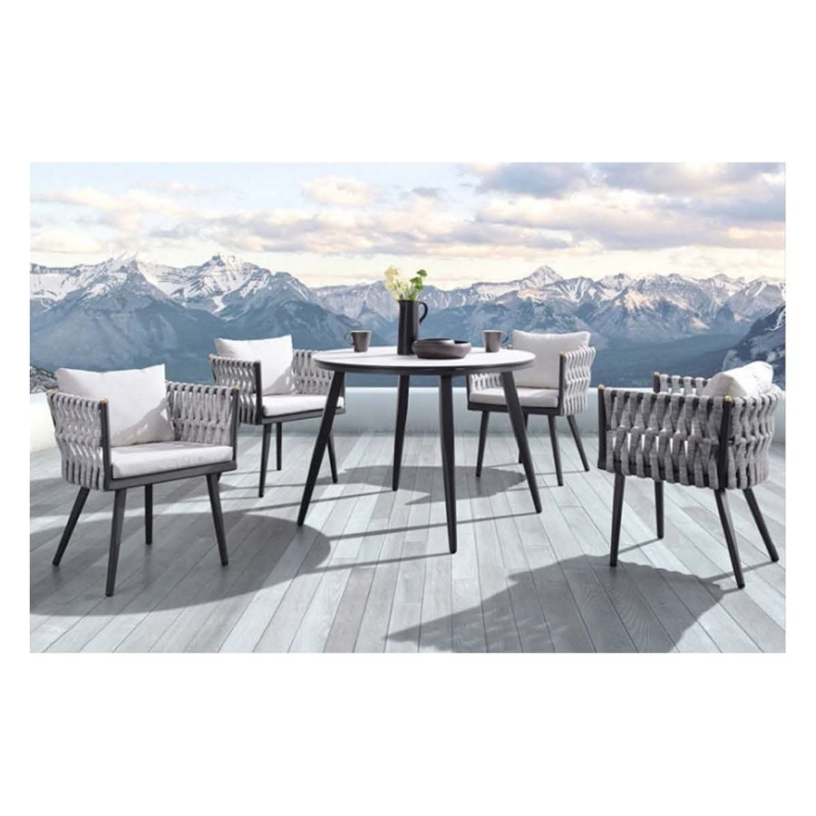
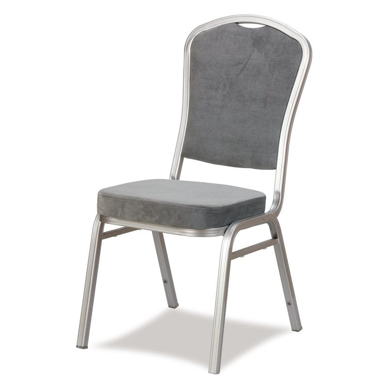

Gas-spring monitor arm with desk clamp (17–32 inch, up to 9 kg, VESA 75/100)
Slim aluminium monitor arm with gas spring for 17 to 32 inch screens, mountable with desk clamp or grommet.
The monitor arm lifts the screen to eye level and frees the desk surface, a classic accessory for sit-stand workstations. The gas spring adjusts to monitor weights of 1 to 9 kg, so the screen can be raised, lowered, tilted and swivelled with one hand and stays in any position. The slim metal frame with cable routing and rotation stop looks tidy in meeting and reception areas as well. Discerning buyers in Germany expect a clean VESA mount of 75 x 75 and 100 x 100 mm, top-side installation without crawling under the desk, documented endurance tests and a German manual. Gas spring and joints should be covered by spare parts or a warranty.
Technical data
| Screen size | 17–32 inch |
|---|---|
| Load capacity | 1–9 kg (adjustable gas spring) |
| VESA mount | 75 x 75 and 100 x 100 mm |
| Range of motion | Rotation ±180°, swivel ±90°, tilt ±45°, arm extension 395 mm |
| Mounting | Desk clamp or grommet, installed from the top |
| Material and colour | Aluminium, steel, plastic; matte black or matte grey |
| Dimensions (W x H x D) | 117 x 520 x 565 mm |
| Packaging | 1 pc per carton 41.5 x 20.5 x 11.5 cm, 2.86 kg gross / 2.3 kg net |
| Customs tariff number (HS) | 83025000 |
EU standards and regulations
GPSR (EU) 2023/988ProdSG / GSTested safety (GS, voluntary, e.g.; TUV): stability and durability of arm and gas springVESA FDMI (MIS-D 75/100)Flat display mounting interface: hole pattern 75 x 75 and 100 x 100 mmREACH (EG) 1907/2006Chemicals in powder coating, plastics and screws (SVHC, Annex XVII)RoHS 2011/65/EUOnly for variants with USB ports: electrical components, then CE (EMC) and possibly ElektroG registration applyVerpackGPackaging registration (LUCID) and system participation for carton and filler
Goes well with
More products in this category

